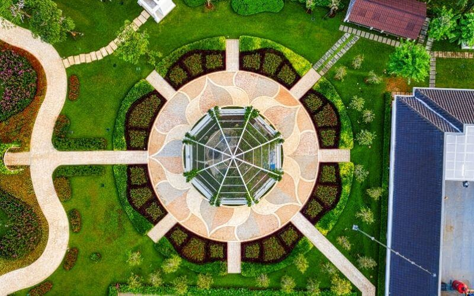

Here are some practical ideas for designing your own landscape
It can be exciting and difficult to design your own landscape. Here are some ideas and suggestions for those who are thinking about such a project.
Plan the Project
The first and most important step in designing your landscape is planning. Make sure you take the time to research the information that you need in order to make the right decisions about the elements you want to include in your landscaping design. Do you need a patio, footpaths, walkways, or a pond? What kind of ground cover, plants, trees, flowers and plants will you choose? To help you make these choices, read articles and landscape design magazines. تنسيق حدائق You will be proud of your finished project, saving time and money.
The Design
Next, you will need to design the landscape. The next step is to create a landscape design. There are many landscape planning guides available online that provide step-by-step directions. You can also find books and eBooks. After you have completed your landscape design layout, you can begin to place your elements onto the layout pad. This is your initial or preliminary plan. As you work, any changes to the layout can be made to your secondary or updated plans. It is okay to change your mind from time to time. This is only a paper plan and you haven't spent any money nor performed any labor. Before you can create the final landscape design, it is important to experiment with several plans. Landscape design will not look the same at all times of the year. Your landscape design should be flexible to adapt to changing seasons. Your landscape should be as low maintenance as possible.
Software for Landscape Design
Landscape design software is a great option if you find it difficult to visualize the final landscape design from just looking at the layout. Although landscape design software was initially designed for professionals, it has since been modified to be accessible to the novice who is looking for a way to make their landscape designs. There are many landscape design programs that you can use to do it yourself. شركة تنسيق حدائق Landscape design software allows you to see a virtual landscape and lets you move objects around to make changes. You can import a photograph of your house or building to create the landscape. Many landscape design software programs can provide advice on how to use and place the various elements that are available in today's landscape design. Landscape design software can help you see how your landscape changes over time. It is possible to see how it will look in five or ten years after the trees have matured and the plants are dead.

Gardens
People love to include a garden into their landscape designs. You can place a garden in a corner or make it the center of your entire landscape design. You can place gardens among plants, flowers, and trees to blend into the landscape design. When planning your landscape design, don't forget about the many garden design options available to you.